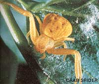
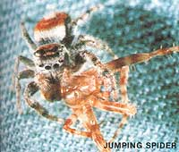
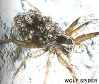
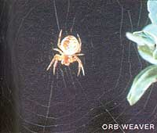

Here's the fourth of a series of articles that will help you tell friend from foe in your garden.
Few creatures are more misunderstood-or maligned-than spiders. Actually, of the 30,000-plus species of these purported people-poisoners, very few pose any real threat to humans. Rather, most of them are extremely useful to us: Not only do they help preserve the delicate balance of nature, but they're often among the first small predators to become active in eradicating pests from the spring garden plot.
Like other arachnids, a spider differs from an insect in that it has eight rather than six legs and two distinct body sections (as opposed to an insect's three). It may not be much of a danger to you or me, but a spider's a remarkably efficient killer machine when it comes to creatures of its own size. The two fangs mounted below its head are connected internally to venomous glands, enabling it to sedate and paralyze its prey immediately upon capture. Some spiders inject a digestive enzyme (which liquefies body tissues so that they can be easily ingested) directly into a victim's body cavity, while others first crush their quarry and then cover its carcass with the substance. Either way, all that remains after the spider's repast is an outer shell.
However, before dinner can begin, a victim must be caught . . . and many an eight-legged killer prepares by spinning a silken web from a liquid protein produced by a group of internal glands near the tip of its abdomen. As this fluid is pulled through the spinnerets (a cluster of external nozzles located near the anus), it hardens to form the prey-trapping net. The strands of the web may seem flimsy, but their tensile strength can be greater than steel filaments of the same diameter!
This silk is also used by spiders to fashion protective cocoons for their eggs and
for wrapping up their prey. Perhaps its most fascinating use involves a behavior
known as ballooning, a technique whereby arachnids can sail through the air for long distances on threads produced by their own bodies. (Young spiders disperse them selves to different areas this way.) To balloon, a spider stands on a lofty spot with its abdomen raised and squirts several strands of silk out into the atmosphere. These still-attached off -shoots serve as a parachute whereby a silk-spinner can hoist itself onto a passing breeze and journey several hundred feet in one bound.
At least 3,000 species of spiders are found throughout North America. To simplify matters, most of them can be divided into two categories, according to their predatory habits.
Trapping spiders construct webs to capture their diet of mostly mature flying insects. In this division are the common orb-weaving Araneidae that spin the familiar flat, spiraling webs on vegetation . . . the cobweb spiders (Theridiidae). . . the funnel weavers (Agelenidae). . . and the sheetweb spiders (Linyphiidae). In general, arachnids of these types are considered to be lower on the evolutionary scale than those in the other category: the hunting spiders.
Hunters-which go out and seek their food rather than passively waiting for it-are very helpful to gardeners, because they often snare pests that are not yet mature enough to fly. The most numerous hunters on this continent are the crab (Thomisidae), jumping (Salticidae), and wolf (Liosidae) spiders.
Of these three, crab spiders (so named because of their shell-like appearance) are the most common and are usually found with their long front legs spread wide open on flowers or leaves, waiting to ambush unwary victims. Most of the crab spiders are light- or medium-colored, and a few of this type are able to change their hue slightly to blend in with the surrounding foliage.
Jumping spiders have compact bodies and short legs, and are characterized by constant short, jerky movements. They do their "dirty work" by leaping forward quickly to kill their prey. Like most spiders, jumpers have eight eyes, but their abnormally large peepers enable them to detect objects several inches away . . . which is considered excellent eyesight for a spider.
Wolf spiders are more typically spiderlike in appearance and frequently-because of their dull coloration-travel about unnoticed in their habitat on the ground and under debris. Like the jumpers, Liosidae have big eyes and better than average vision. The female wolf spider is an especially "conscientious" mother, carrying her eggs in a small, spherical sac attached to the tip of her abdomen. When the eggs hatch, the babies climb aboard her back and ride there until they're ready to be on their own.
It's unfortunate that so many of us are taught at an early age to fear these fascinating, usually benign creatures. We're really much better off with them than without them, as any knowing gardener will tell you.
|
 |
 |
 |
|
 |
|
|